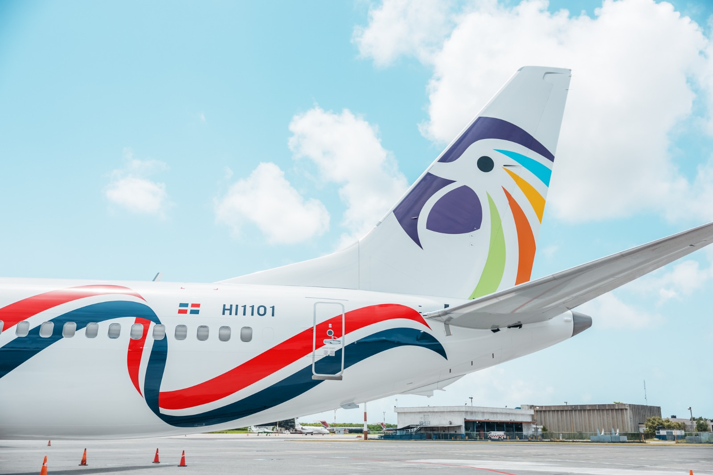

Actividad.4 Maribel Ledesma
Arajet logro cifras record de pasajeros y ventas en julio
Según los datos publicados en el portal de la Junta de Aviación Civil
de la República Dominicana, Arajet transportó en el mes de julio 128,178
pasajeros, sin contar los pasajeros en tránsito, que según informa la
aerolínea fueron unos 15 mil en ese período, por lo que la cifra total
de pasajeros en el mes de julio sobrepasó por primera vez el umbral de
los 140 mil pasajeros transportados.
Con estas cifras Arajet se posicionó como la tercera aerolínea con más
pasajeros transportados en julio, solo por detrás de Jetblue y American
Airlines, que transportaron 463 mil y 216 mil respectivamente; y superando
por primera vez a Delta, United y Copa que transportaron 126 mil, 123 mil
y 112 respectivamente.
Además, Arajet representó el 80 % del transporte de pasajeros entre las aerolíneas
dominicanas, seguido por Sky High que transportó un 15 % y Air Century, Red Air y
Panorama jets que transportaron un 5 %.“Estamos en nuestro mejor momento y esto
nos llena de entusiasmo para seguir adelante construyendo el nuevo hub del continente
en República Dominicana” aseguró Víctor Pacheco, CEO y fundador de Arajet, a través de
un comunicado enviado a los medios.
“Seguimos creciendo en pasajeros, en ventas, en cantidad de aviones, en creación de
empleos por lo que estamos confiados que la segunda mitad de este 2025 cerrará con
números muy positivos que ayudarán al país a lograr las metas de pasajeros y turistas
que se han trazado”, agregó.
La aerolínea también informó que el mes de julio 2025 fue el mejor mes en ventas, impulsado
por promociones de verano que se realizaron para estimular la llegada de turistas al país
en los próximos meses, así como activaciones en Estados Unidos para la diáspora dominicana.
Arajet está ofreciendo ya 28 destinos en 16 países y en los próximos meses estará inaugurando
las rutas de Chicago, Orlando y Boston en los Estados Unidos, así como la de Córdoba en Argentina.
Imágenes sin borde

Imágenes con borde
Videos
Himnos
Recorte Digitalizado
El indrhi y CAF presentan diseño final de proyecto
La obra busca optimizar la irrigación agrícola en la provincia Valverde
y zonas aledañas, beneficiando a más de 52 mil habitantes y 2,274 agricultores.
En la apertura de la primera jornada, realizada en el Salón de Conferencias del Indrhi,
el director ejecutivo de la entidad, Olmedo Caba Romano, destacó que se trata de un cambio
de paradigma en la gestión del riego en el país. Explicó que por primera vez se incorporará
una red completamente presurizada de conducción y distribución de agua con tecnología de
última generación. Esto permitirá maximizar la producción agrícola, reducir pérdidas y disminuir
costos operativos. “Este proyecto es un paso trascendental hacia el manejo eficiente de nuestros
recursos hídricos, que impulsará el desarrollo del sector agropecuario”, expresó. El diseño fue
ejecutado por las firmas consultoras WSP del Istmo y Red Estudios, se informó.